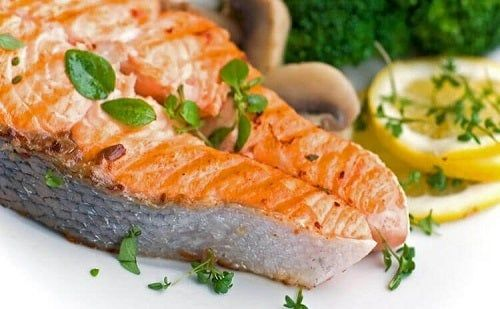

Evelina's Food – Rețete gustoase și sănătoase!
Sari la conținut Meniu Acasă Aperitive Supe/Ciorbe Paste/Pizza Paste Pizza Fel principal Rețete fără carne Rețete cu Pește Rețete cu carne de Curcan Rețete cu carne de Pui Rețete cu carne de Rață Rețete cu carne de Porc Rețete cu carne de Miel Rețete cu carne de Vită Salate Desert Sosuri/Altele Despre Contact
Evelina s Food
Rețete gustoase și sănătoase!
Publicat în DesertSalam de biscuiti
Publicat de septembrie 8, 2020 de EvelinasfoodSalam de biscuiți- această rețetă îmi aduce aminte de copilărie. Este un preparat ce poate fi pregătit destul de ușor, amintindu-ne de dulciurile preparate de bunica. Putem personaliza rețeta, după propriul gust cu alune, stafide, fistic, fructe confiate, ciocolată. Vă invit să încercați această rețetă de salam de biscuiți!
Citește în continuare „Salam de biscuiti” Publicat în Fel principal , Rețete cu PeștePaella cu fructe de mare
Publicat de august 16, 2020 de EvelinasfoodPaella cu fructe de mare (Marisco), este o mâncarea tradițională spaniolă. Sunt foarte multe rețete de paella, însă ceea ce vă propun eu astăzi este cât mai aproape de cea originală. Este o mâncare sănătoasă și ușoară care se prepară rapid, iar în ceea ce privește gustul, acesta nu poate fi exprimat în cuvinte. Personal ador bucătăria spaniolă și abia aștept să încerc câte un preparat nou din această zonă ori de câte ori am ocazia. Paella se potrivește foarte bine cu un vin alb foarte rece sau o sangria.
Citește în continuare „Paella cu fructe de mare” Publicat în DesertPandișpan cu fructe
Publicat de august 8, 2020 de EvelinasfoodPandișpan pufos cu fructe de sezon (caise,prune,cireșe, piersici, căpșuni, vișine, fructe de pădure congelate) – rețeta simplă și ușoară de prăjitură pufoasă cu fructe de vară ce rămân la suprafață și nu se scufundă în blat. Pandișpanul pufos cu nectarine nu conține praf de copt. Pentru a pregăti pandișpan pufos aveți nevoie de puține ingrediente, pe care le aveți în casa. Așa cum observați, pandișpanul meu cu fructe de sezon a ieșit foarte pufos și a crescut chiar și fără praf de copt. Blatul aerat și pufos a fost realizat cu ajutorul albușurilor bătute spuma foarte tare. Vă invit să încercați această rețetă de pandișpan cu fructe de sezon!
Citește în continuare „Pandișpan cu fructe”
Publicat în SalateSalată fresh cu brânză de capră
Publicat de iulie 29, 2020 de EvelinasfoodSalata fresh cu brânza de capră este o rețetă ușoară, perfectă pentru cină, sau prânz care se prepară rapid, fiind foarte sănătoasă. Este ideală în curele de slăbire având puține calorii. Spanacul este bogat în fier, acid folic, vitamine( K, A, C). De ce trebuie să consumăm brânză de capră?
Citește în continuare „Salată fresh cu brânză de capră”
Publicat în DesertChec cu nucă pufos
Publicat de iulie 23, 2020 august 16, 2020 de Evelinasfood
Chec pufos cu nucă și stafide. Checul este unul dintre cele mai apreciate dulciuri fiind foarte ușor de preparat. Se poate face cu cacao, ciocolată, diverse fructe confiate/uscate, nuci, stafide, merișoare, alune de pădure, migdale. Un chec deosebit cu care vă veți impresiona nu doar pe cei dragi, dar și pe oricine vă face o vizită. Este perfect atât pentru o ceașcă de ceai sau de cafea servită în familie sau cu prietenii, cât și pentru ocaziile speciale. Vă invit să încercați această rețetă de chec cu nucă!
Citește în continuare „Chec cu nucă pufos”
Navigare în articole
Articole mai vechiCaută
URMĂREȘTE-MA:
YouTube Facebook Instagram Pinterest TwitterNOU! ABONEAZA-TE LA CANALUL MEU DE YOUTUBE!
YouTubeUrmărește blogul prin email
Aperitive Desert Fel principal Paste Paste/Pizza Pizza Rețete cu carne de Pui Rețete cu Pește Salate Supe/Ciorbe
Tradu
Arhivă
Arhivă Selectează lună septembrie 2020 august 2020 iulie 2020 iunie 2020 mai 2020 aprilie 2020 martie 2020 decembrie 2019 noiembrie 2019 octombrie 2019 septembrie 2019 martie 2019 decembrie 2018 noiembrie 2018 iulie 2018 iunie 2018 mai 2018 aprilie 2018 martie 2018 ianuarie 2018 decembrie 2017 noiembrie 2017 octombrie 2017 august 2017 iunie 2017 mai 2017 aprilie 2017 martie 2017 februarie 2017 ianuarie 2017 decembrie 2016 noiembrie 2016 octombrie 2016 septembrie 2016 august 2016 Reclame Facebook Youtube Instagram Pinterest Twitter Tema: Scratchpad de Automattic . Evelina s Food